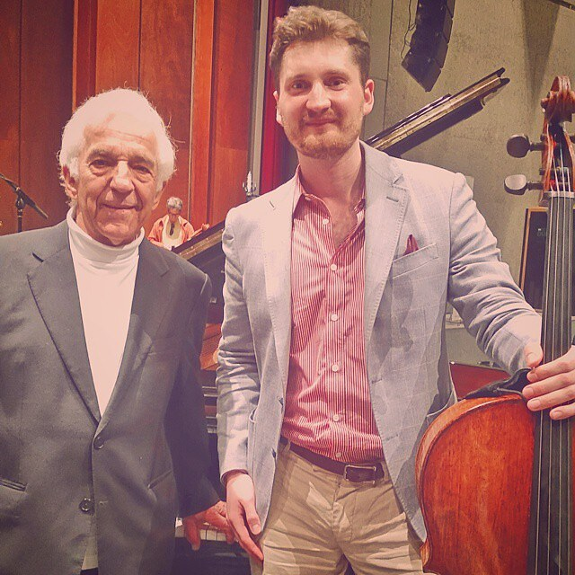
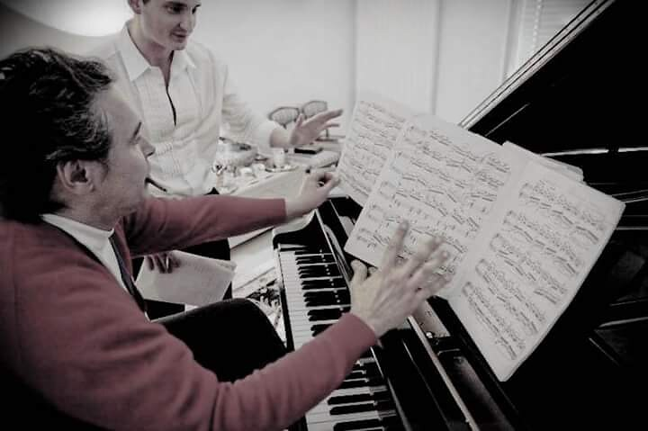
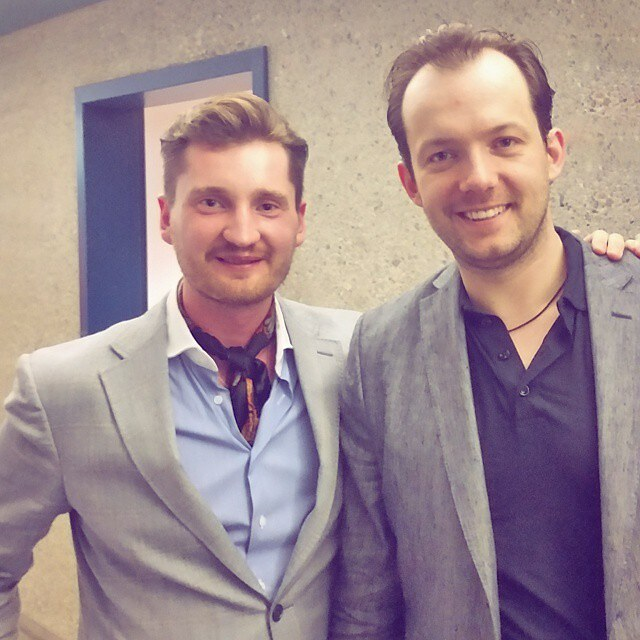
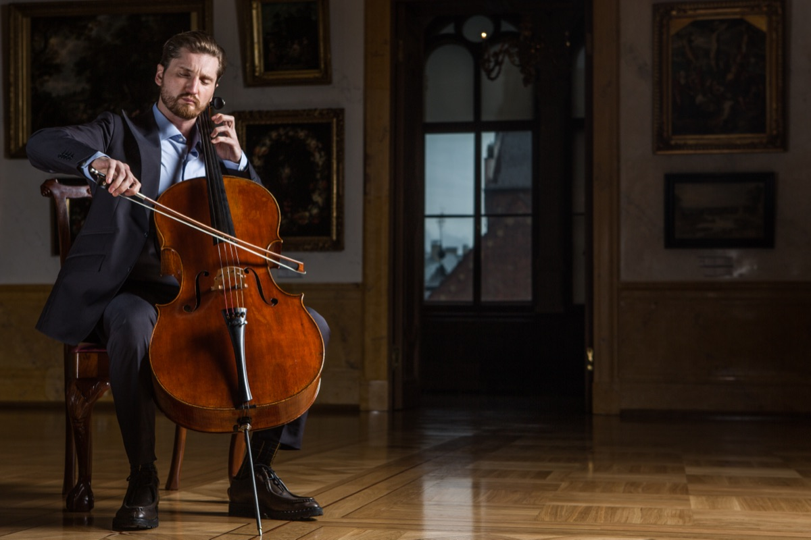
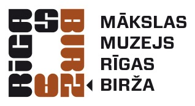
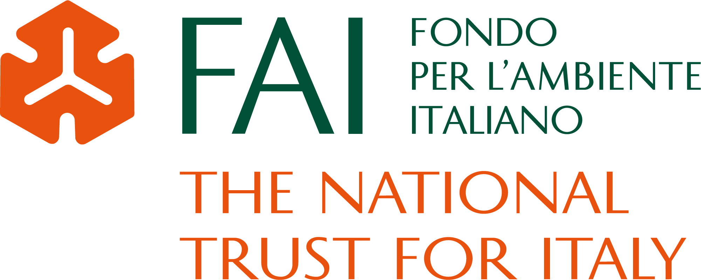

The Cellist
Three decades inside the European concert tradition. Solo and chamber tours through Musica Viva — thoughtfully curated programmes in landmark European venues, from Lugano and Lake Como to Palermo.
Musica Viva — tour dates →Cellist · Founder
I hear an Italian voice.Riccardo Muti · on his Rachmaninoff, Vocalise

“Impressive and memorable — deep performance.”

“A dedicated and gifted musician — his determination will carry him far.”

“A very deep musician — serious, fresh ideas, a clear personal interpretation.”
“The qualities of a great artist — astonishing technique combined with emotion, passion, creativity.”
Three decades inside the European concert tradition. Solo and chamber tours through Musica Viva — thoughtfully curated programmes in landmark European venues, from Lugano and Lake Como to Palermo.
Musica Viva — tour dates →Beitan Music Foundation — curating cultural tours worldwide and facilitating collaborations between artists and collectors. Partners: FAI · Florian Leonhard · LAC Lugano.
Rare Italian instruments and cultural asset stewardship. Private consultations on provenance, acquisition, loan structures and exhibition curation.
Advisory enquiries →
A Latvian cellist celebrated for emotive performances and innovative interpretations. Max Beitan's musical journey began at the age of four in Latvia; he made his international debut at eight with the Kaunas Philharmonic, and at nine won his second Grand Prix at the Liezen International Cello Competition — drawing the attention of Daniil Shafran, who invited him to study privately.
Mentorships followed with Johannes Goritzki, Victoria Yagling, Natalia Gutman, and the pianist Ivo Pogorelich, whose teaching has left an indelible mark on Beitan's approach to performance. Triumphs in 18 international competitions and five Grand Prix; Honorary Swiss Government Grant holder.
Performs with the Latvian National Symphony Orchestra, Orchestra della Svizzera Italiana, Dresdner Philharmonie, and at festivals from Lugano to Evian. His repertoire merges bel canto lyricism with a deeply expressive, almost spoken technique — the signature work is Carmen Fantasy by Buxton Orr; transcriptions of Heifetz, Kreisler and operatic and film scores recur throughout the programmes. Original compositions, performed in concert, await formal publication.
In 2024 Beitan represented Latvia at the 75th Anniversary of NATO, performing at the National Library in Washington, D.C.; further U.S. appearances include the Andrew W. Mellon Auditorium. Among other diplomatic engagements he has performed at the United Nations in Geneva at an event hosted by the Italian Embassy, and at the awards of the Biennale di Venezia. Beyond the concert stage he founded the Beitan Music Foundation, curating international cultural tours and museum-grade exhibitions of Stradivari, Guarneri and Amati instruments at Villa del Balbianello, Villa Mozart and the Art Museum Rīga Bourse — the latter in long-term curatorial partnership with the museum on Italian instrument programming. His curatorial work extends to fine art in national museums: he co-organised exhibitions of the American painter Hunt Slonem at the Latvian National Museum of Art (Rīga Bourse) and the Ġ. Eliass Jelgava Museum of Art and History.
Milestone jubilee celebration. Masterpieces and virtuoso transcriptions, with invited guest musicians from jazz, pop, classical and rock.
Past · 2026
· Listen & watch ·

In the press
Featured in · partners & patrons


Full press archive · on request